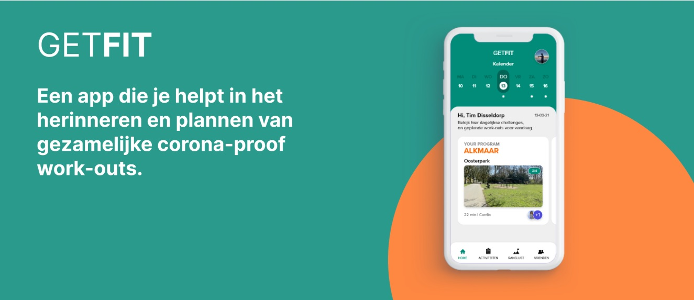
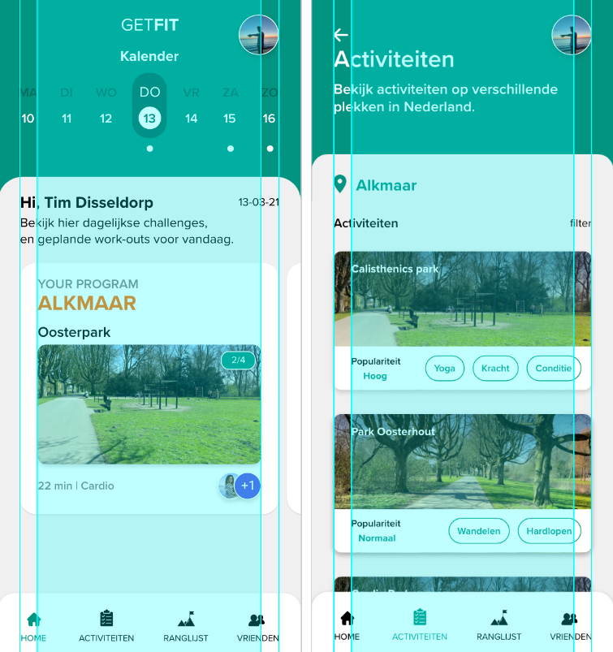
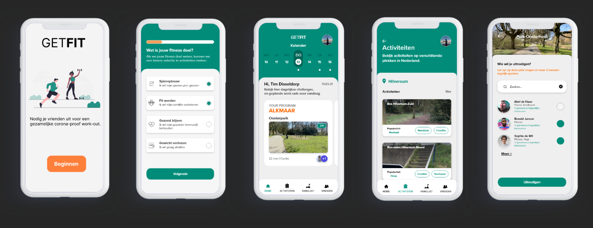

GETFIT - Appdesign
Tijdens de huidige corona-situatie is het sporten voor iedereen beperkter geworden. Sportscholen zijn gesloten en er is een avondklok ingesteld waardoor het lastiger is geworden om te sporten. Toch probeer ik zelf te blijven sporten. Ik heb zelf de mogelijkheid om thuis te sporten met een eigen toestel. Daarnaast sport ik ook in parken, wat ik nu ook terug zie bij anderen mensen. Mensen zoeken toch een manier om te bewegen buitenshuis en houden zich daarom bezig met buitenactiviteiten. Ik wil gebruikers ondersteunen in het buitensporten door een interface te bedenken waar gebruikers eenvoudig en snel een buitenactiviteit met vrienden of andere mensen kunnen plannen. Hierdoor kunnen gebruikers elkaar uitnodigen om een keer lekker te sporten (met de corona-maatregelen) en elkaar motiveren om meer te bewegen. Veel jongeren sporten namelijk weinig in deze zware tijd omdat de mogelijkheden tot sporten beperkt is.

Hoe werkt de app?
GETFIT is een app die zich richt op deze nieuwe intimiteit met betrekking tot sporten. Je kunt in de applicatie activiteiten alleen of met je vrienden plannen om buiten te kunnen bewegen. Hierbij moeten ik wel de corona-maatregelen waarborgen, waardoor er maar een speciaal aantal plekken in de woonplaats beschikbaar zijn. Deze plekken zijn geschikt om buiten te kunnen sporten met een beperkt aantal mensen (maximaal 4 personen). Nu hebben ik en een medestudent verschillende plekken uit onze leefomgeving gefotografeerd en gebruikt in de interface om te kunnen koppelen aan verschillende buitenactiviteiten. Hierdoor weet de gebruiker waar hij/zij kan gaan sporten. Mijn medestudent heeft hier de foto's toegevoegd en een deel van de content geschreven. De activiteiten in de app verschillen en bestaan onder andere uit cardio, yoga, hardlopen en kracht-training. Deze activiteiten kunnen alleen buiten gedaan worden zodat de kans op een corona-besmetting minimaal is. Wanneer de gebruiker een activiteit wilt inplannen met fysieke gewichten, dan zullen wij de gebruiker er op attenderen dat hij voor een goede hygiëne zorgt waardoor de gewichten schoon doorgegeven kunnen worden aan de anderen. Wanneer de gebruiker een activiteit wilt kiezen, kiest hij eerst een locatie naar keuze. Daarna kan hij op zoek gaan naar een activiteit naar keuze en deze ook specificeren via de filter. De gekozen activiteit kun je dan later terug vinden in je persoonlijke kalender. Als de gebruiker samen wilt sporten, dan wordt er een uitnodiging naar zijn vriend gestuurd zodat hij deze ook in zijn kalander kan zetten.
Functionaliteiten ontwerpen
Voor het ontwerpen moest ik rekening houden met de foto´s die gemaakt zijn in de eigen woonplaats. Deze moesten terug te zien zijn in de app en daarom heb ik er voor gekozen om deze foto´s te verwerken in de pagina waar de gebruiker buitenactiviteiten van een gekozen locatie kan zien. De gebruiker kan door buitenactiviteiten heen scrollen en zijn opdracht specificeren doormiddel van een filter. De functionaliteiten vallen binnen hetzelfde grid omdat ik overal gebruik maak van dezelfde elementen. Hierdoor blijft het design consistent.

